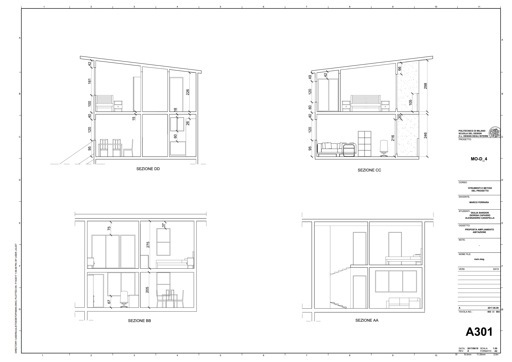
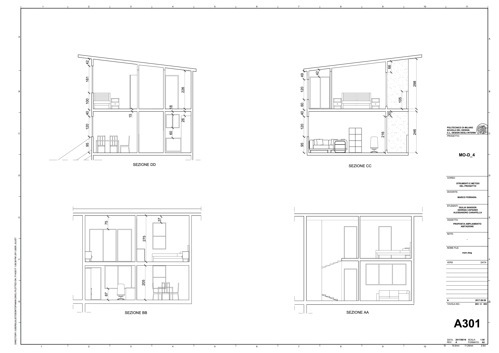
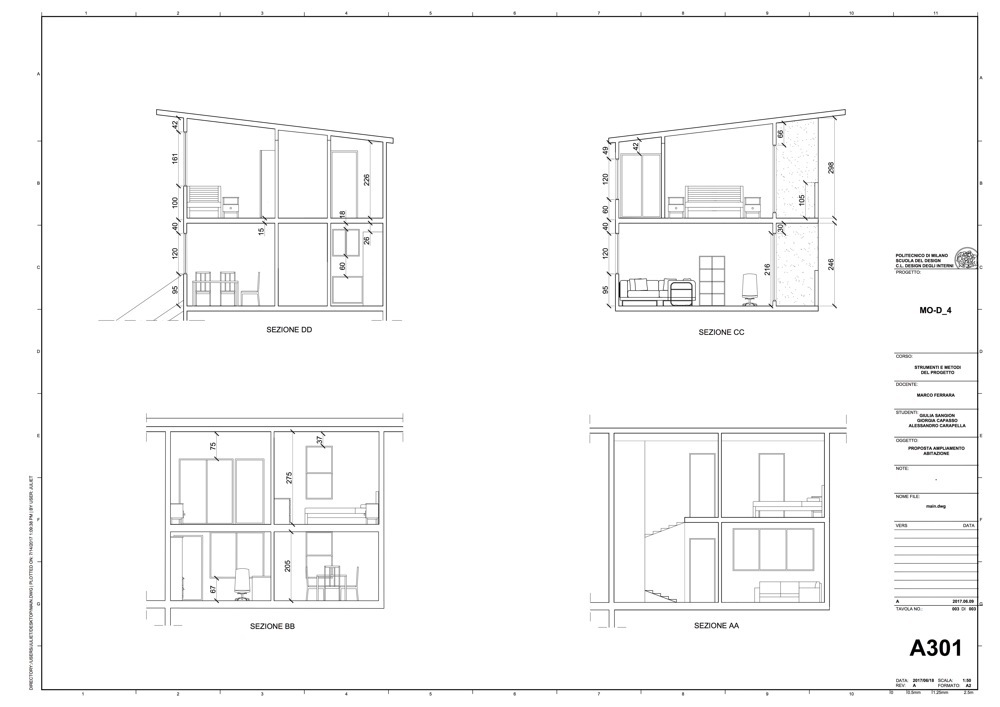

 Monterrey - Messico

Monterrey, progetto di A.Aravena situato a Monterrey (Messico) consiste in un complesso di due appartamenti
distinti e dislocati su più livelli: uno al piano superiore e una su quello inferiore.
Entrambe le unità sono state disegnate e progettate per garantire e rispettare gli standard di vita del ceto medio-basso
evitando spropositati costi e garantendo l'opportunità per un futuro ampliamento.
Ogni appartamento occupa una superficie di 80 m2, dei quali solamente 40 m2 sono stati attrezzati con elettrodomestici ed impianti principali.
Le parti più complesse della struttura, dunque, (quali bagni, cucina, scale e muri divisori)
sono già presenti nei 40 m2 già "funzionanti" del complesso abitativo.
I restanti 40 m2, invece, possono essere gestiti a discrezione degli inquilini, in base alla necessità e alla disponibilità economica.
L'obbiettivo da raggiungere alla fine del semestre, pertanto, era quello
di elaborare un progetto completo e personalizzato per quei 40 m2 "mancanti" partendo dagli elaborati
originali di Aravena.
Il processo produttivo è stato suddiviso in quattro fasi:
FASE 0 : analizzare il progetto e realizzarne un modello di studio sul quale applicare
diverse textures in modo da avere una prima idea di come potesse apparire
l'esterno.
FASE 1: disegnare e progettare i 40 m2 lasciati liberi in modo da ottimizzarli
al meglio
FASE 2: scegliere arredi dal catalogo IKEA e arredare, a scelta, camera, cucina o studio.
Scelti questi, disegnarne gli esecutivi.
FASE 3: disegnare in modo dettagliato l'ambiente scelto offrendone tutte le informazioni necessarie.
Sito sviluppato per il corso di Strumenti e Metodi del progetto
Realizzato da Giulia Sangion, Giorgia Capasso e Alessandro Carapella